Hobbies
</>
Hiking
Camping
Fossil Collecting and Rockhounding
Photography
Bread Baking
Backyard Poultry
</>
Coding is a big part of my research and I enjoy coding for fun! See my github profile and Projects page!

I have experience with the programming languages Python, javascript, html, MATLAB, Mathematica, C, C++, and cern ROOT. I work primarily with Python and I am very familiar with the following packages as I use them frequently in my research: Numpy, Scipy, Keras, Pyroot, Matplotlib, and Pandas. My workflow also includes virtual environments with conda and developing ideas into methods using Jupyter notebooks.
I also love tinkering with Linux systems and was the linux system administrator for Telescope Array’s Data Server and Computational Clusters for two years during graduate school. I used to even host this very website on a Raspberry Pi (until I thought that was an unwanted cybersecurity risk for my home network)!
Here are some javascript applications I have been developing, assisted by agentic AI (mostly Claude and a bit of ChatGPT), to host on this website:
- Star Chart: A Star chart display that takes a topocentric geolocation and projects stars, planets, deep space objects, and satellites into the topocentric frame of the observers position. User can toggle +/- 24 hrs to see these objects progress across the sky.
- Solar System: A Solar system display top down visual of location of planets, minor planets, and asteriod belts in orbit around the sun. Includes a Earth Moon inset to show current moon phase as well as hearth moon Lagrange points. User can toggle through time as well as zoom in and out from sun to see the solar system planets and objects orbit the sun.
- Geostationary Fulldisk Viewer: A display for checking the most recent fulldisk imagery for GOES East and West, Himawari, and EUMetSat.
- Geostationary Mesoscale Viewer: A display of the current GOES Mesoscale Domain Scan (MDS) mode locations relative to space launch centers. Other important information for geosynchronous weather satellites was also included.
- Space Launch List: A display the upcoming space launch schedule for the week with useful information on the launch. Primary source was Launch Library 2 by TheSpaceDevs.
- ISS Tracker: A display that tracks the current location of the International Space Station (ISS) given the latest Two Line Elemenet (TLE) from CelesTrak. Visual in both a globe or the ground track. Includes information about the ISS including orbital elements and live feeds from the ISS.
- Satellite Perspective Viewer: A visualization tool for onfiguring a satellite's location, payload line of sight, and Payload field of view or detector and optics specs. Satellite location is defined in Latitude, Longitude, and Altitude (LLA), LOS is defined in Azimuth and Off-nadir angel, FOV is defined in angular extent.
- AI Disclosure: Claude and a bit of ChatGPT was used to assist in the generation of the javascript, css style, and visualization in these applications under my direction and prompting. These GPT models made mistakes in the initial codes, which were identified and addressed. If any errors remain, please let me know!
These applications are fun exercises in showcasing how General Pretrained Transformers (GPTs) and Large Language Models (LLMs) are amazing tools for adapting ideas into practical systems through prompting. It is an interesting and surprisingly rapid way to develop applications and demonstrations related to my hobbies. It is also interesting to see were these systems fail and need to be corrected.
Hiking
Living in Boulder, CO offers close access to the Front Range or proximity to National Parks in Colorado, Utah, New Mexico, or Wyoming. This allows me ample opportunity to hike and experience the outdoors.
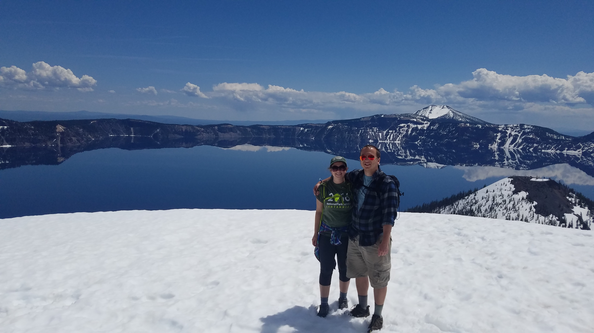

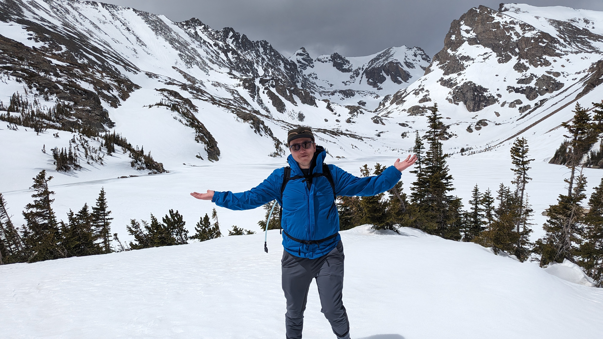
Camping
Living out west, there are many of opportunities for camping outdoors. The west provides options to camp in State Parks, National Parks, and on our Public Lands. Best yet is finding my own campsite in a National Forest or Federal land managed by the Bureau of the Land Management (BLM) where permitted. There is much land out west that one can use for dispersed camp! Please practice principals of Leave No Trace!
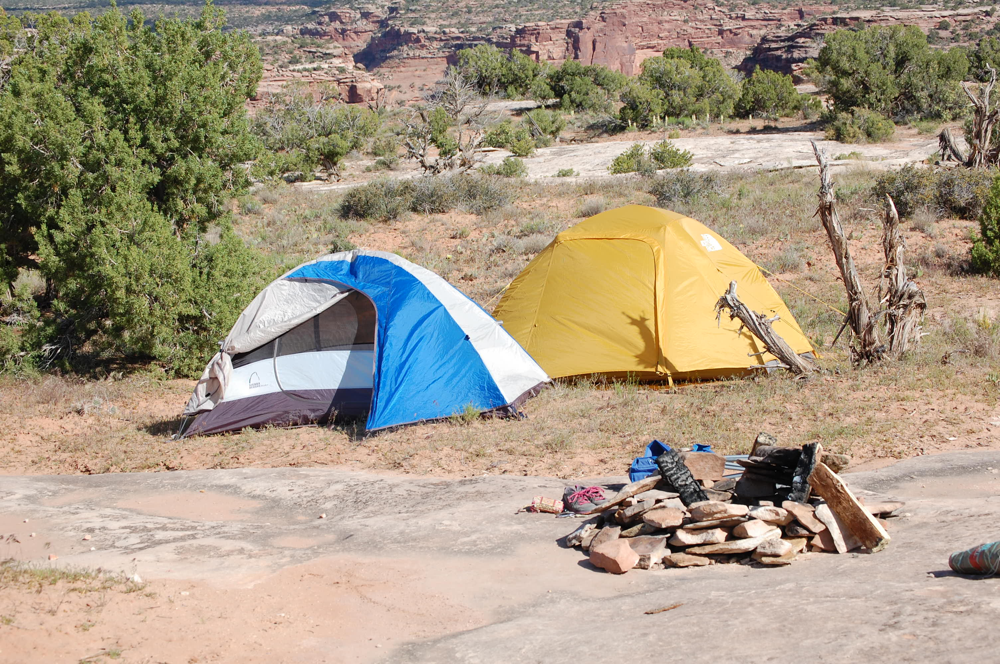
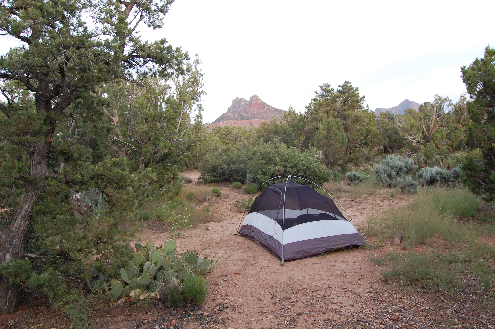
Fossil Collecting and Rockhounding
Utah has plenty of unique fossils and rocks. While working for the Telescope Array Cosmic Ray Observatory, I had plenty of time to explore Millard County, UT looking at the rocks out there. I have traveled to the Dugway Geode Beds, Topaz Mountain, Fossil Mountain, Sunstone Knoll, and more. On public land you may collect rocks and fossils (always check federal, state, and local regulations and make sure you are not on a active register claim!). Good sources for rules in Utah are: BLM Collection Rules and Utah Geological Survey Collecting Rules.


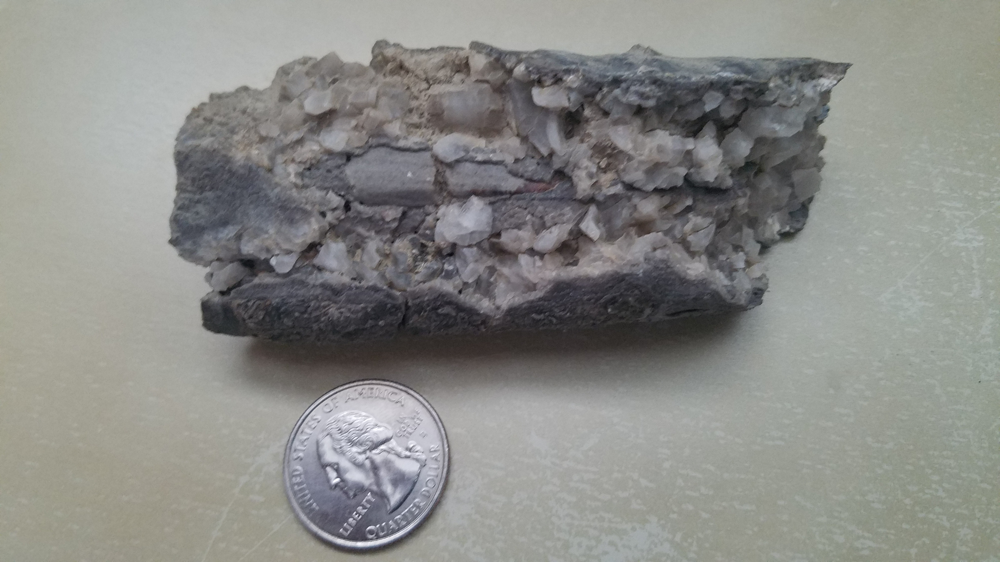
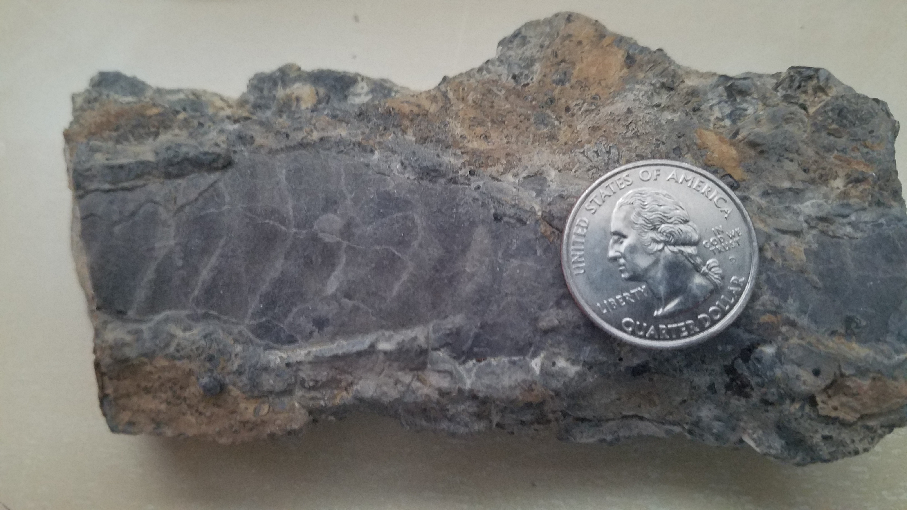

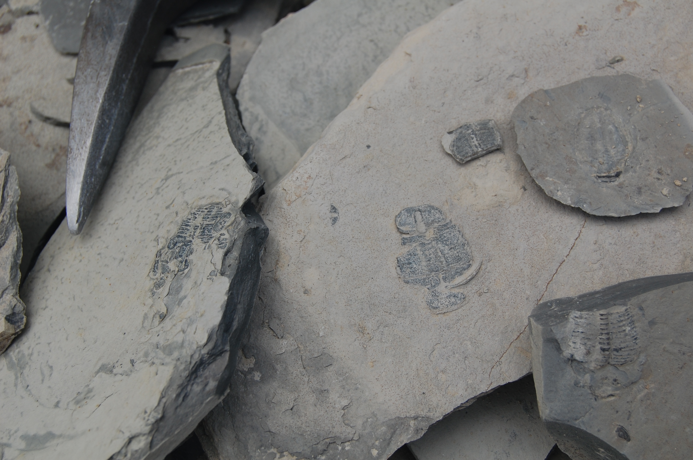
Photography
Spending time in the great outdoors gives lots of inspiration for capturing the amazing views one can appreciate from being in the right place in time. The main subjects I enjoy photographing is landscape and astrophotography.
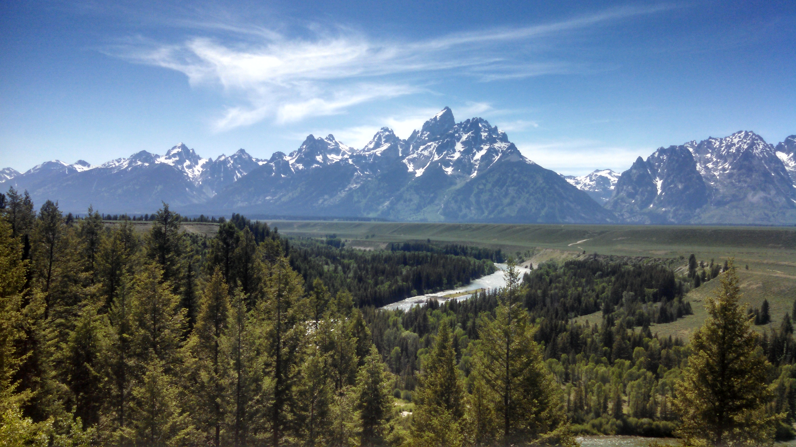
Bread Baking
I have a sourdough starter (named Fest) that I’ve been feeding since graduate school(~2018). I enjoy baking bread and find the process very soothing and rewarding. I am fascinated with making bread from an wild yeast! Also the bread also comes out extremely tasty, smells amazing, and looks beautiful! Check out my Sourdough Bread recipe.
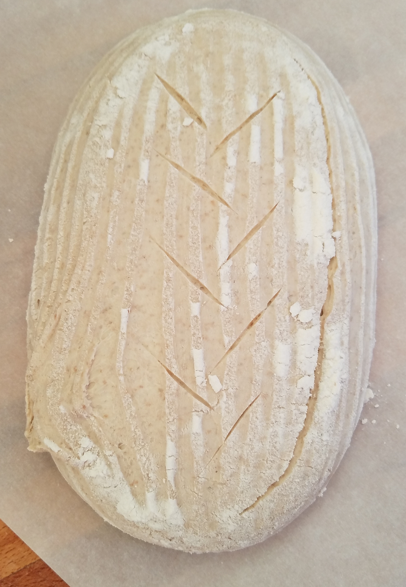
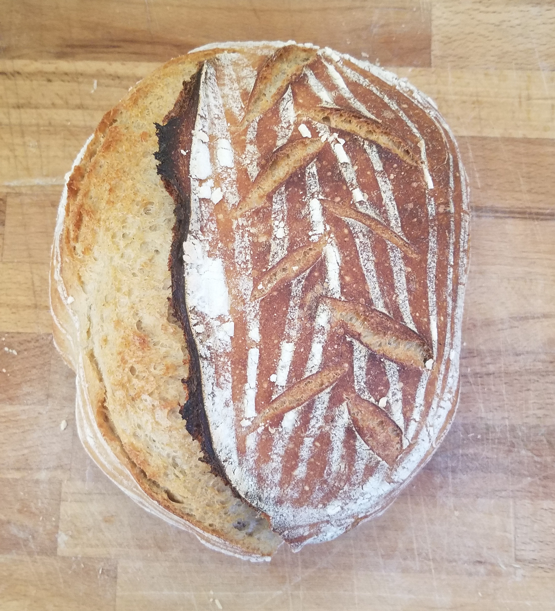
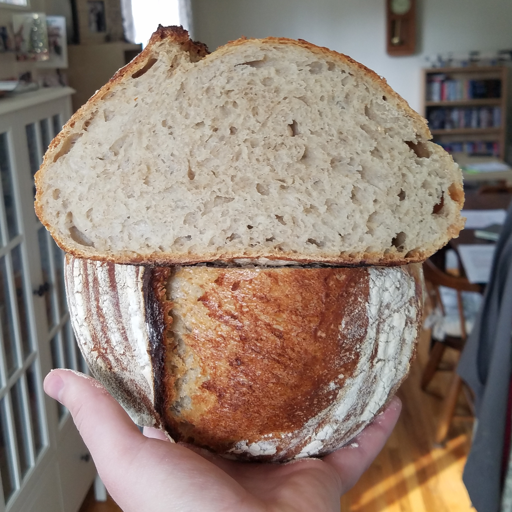
Feeding my sourdough starter has become a memorized task after all these years. I believed that I had killed my starter a couple times over the years, but it has become (mostly) reliable. It does seem less active in the winter months while the indoors become much cooler. I leave mine out on the counter out of direct sunlight.
One of my first jobs was working in a pizza joint. I continue my love of baking pizza. Check out my Deep Dish Pizza recipe.
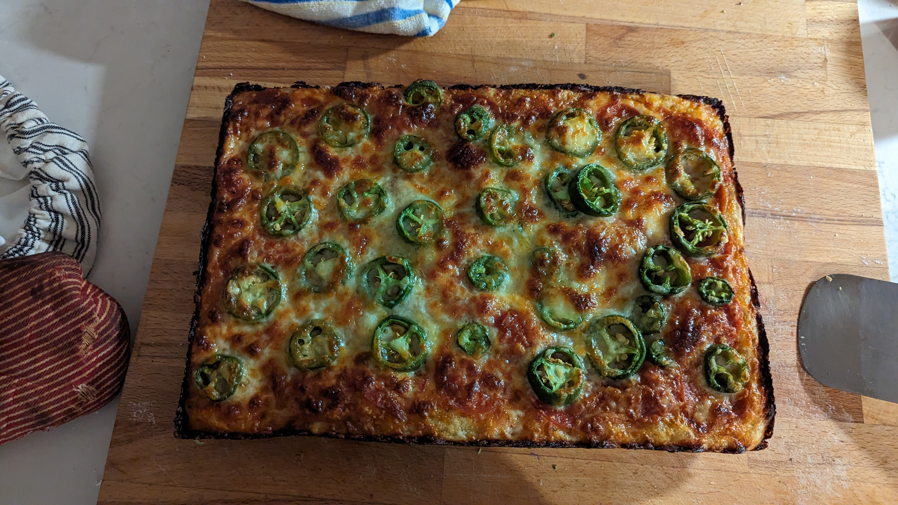
Backyard Poultry
My wife and I have a ‘hobby farm’ in an attempt to sustainably raise a decent amount of our food from our home garden and we raise poultry for eggs(chickens) and meat(turkey and broilers). I enjoyed the curious nature of turkeys, which has made processing them for Thanksgiving much harder.


Back to Top